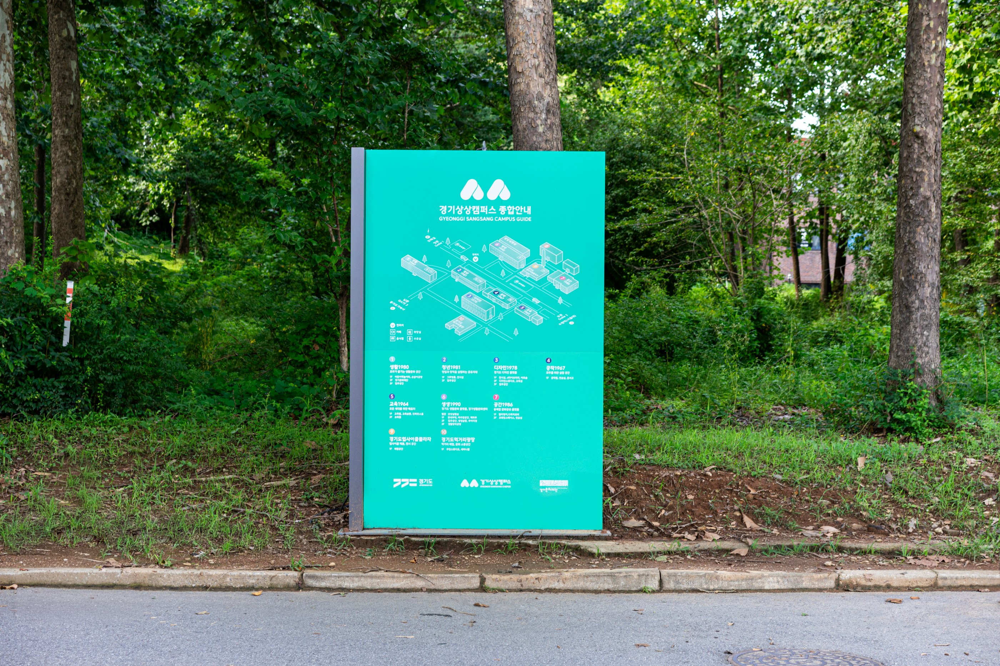
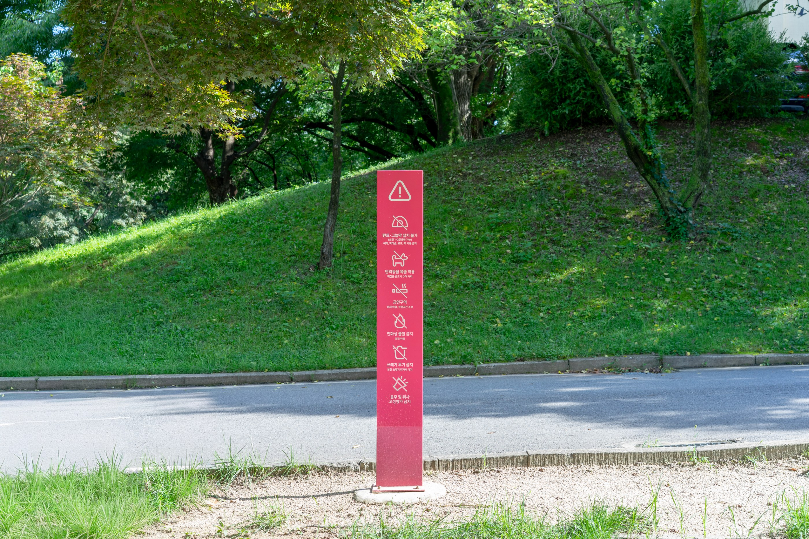
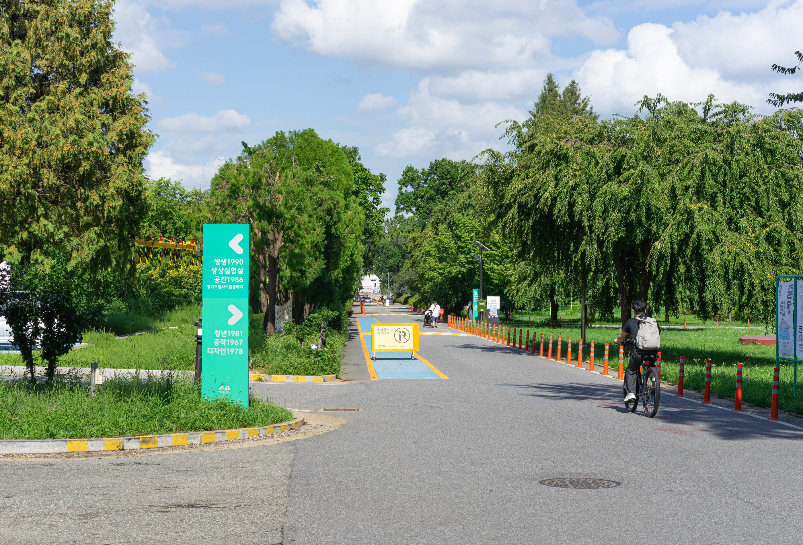
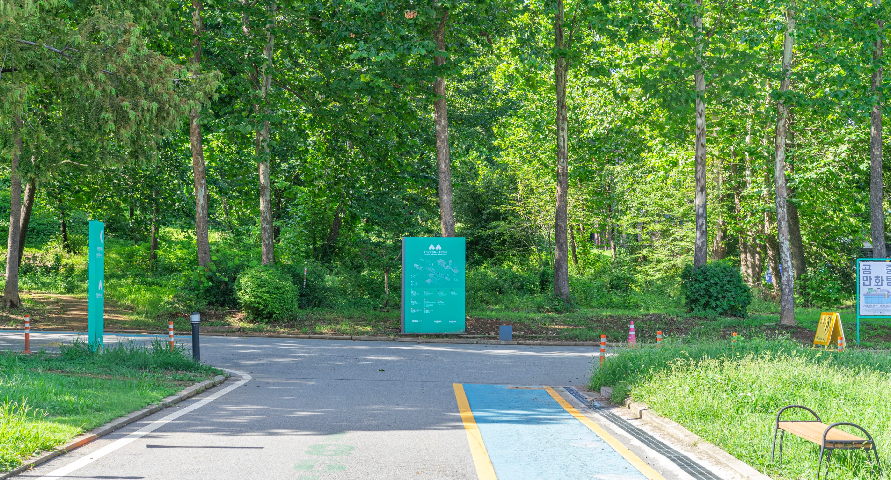
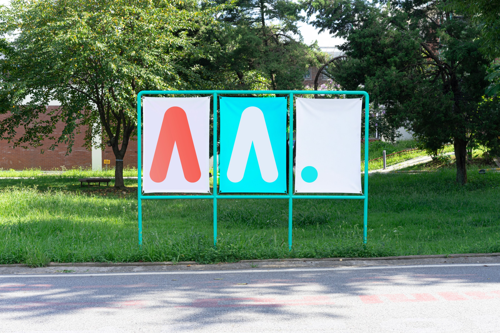
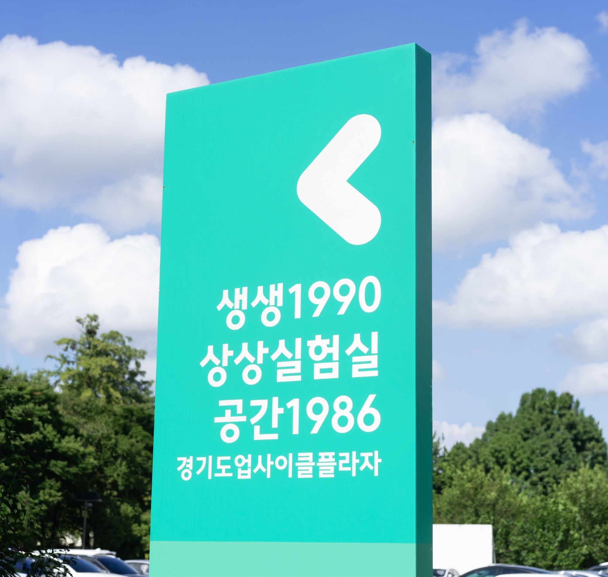
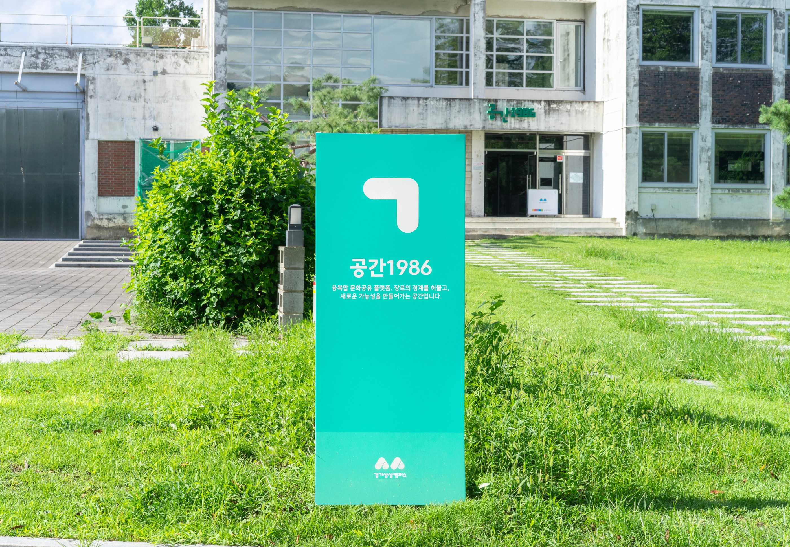

Signage
Sangsang Campus Signage
2024
경기상상캠퍼스 부지 내의 명확한 정보 전달과 공간 분위기 개선을 목적으로 하는 방향 안내 사이니지 디자인 과업을 수행했다. 과거 서울대학교 농업생명과학대학 부지였던 이곳은 경기문화재단이 복합문화공간으로 운영하고 있으나, 인도와 차도가 제대로 구분되지 않고 주차와 각 공간에 대한 안내 시스템도 정립되지 않아 혼란이 있었다.
기존 로고의 두꺼운 초성 이미지를 바탕으로 화살표와 간판의 디자인 어휘를 정했다. 녹색 풍경과 적당히 대비를 이루는 청록색을 방향 안내에, 분홍색을 주의 안내에 적용하였다.
A wayfinding signage project for Gyeonggi Sangsang Campus, aiming at clear information and a better atmosphere across the site. Formerly the grounds of Seoul National University's College of Agriculture and Life Sciences, it is now run as a cultural complex by the Gyeonggi Cultural Foundation, but pavements and roads were poorly separated and guidance to parking and buildings had never been organised.
The arrows and sign vocabulary build on the thick initial consonants of the existing logo. A teal that contrasts moderately with the green landscape is used for directions, and pink for caution signs.
- Category
- Signage
- Duration
- 4개월 / 4 months
- Company
- SOAP
- Client
- 경기문화재단 / Gyeonggi Cultural Foundation
- ROLE
- Graphic designer






